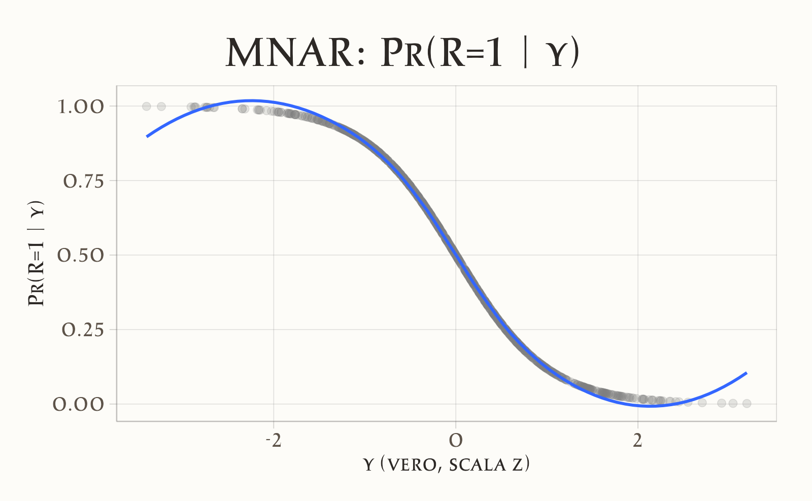
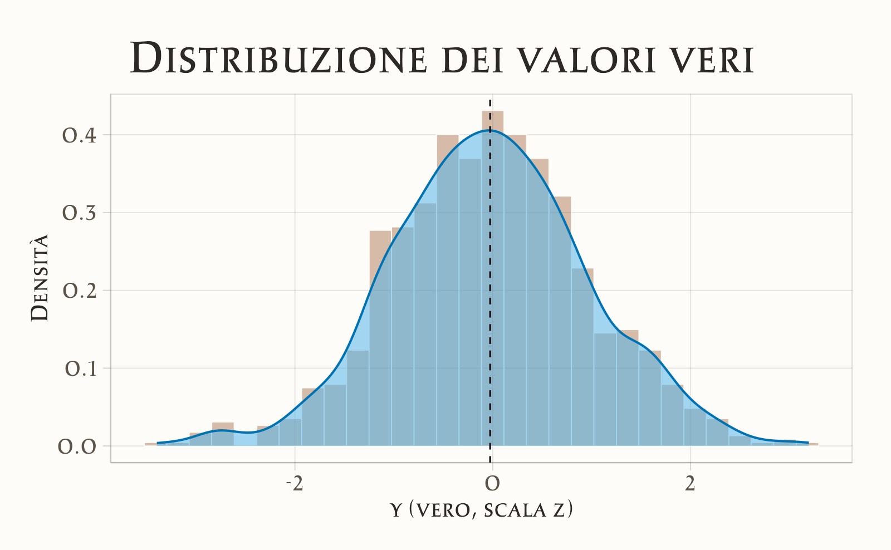
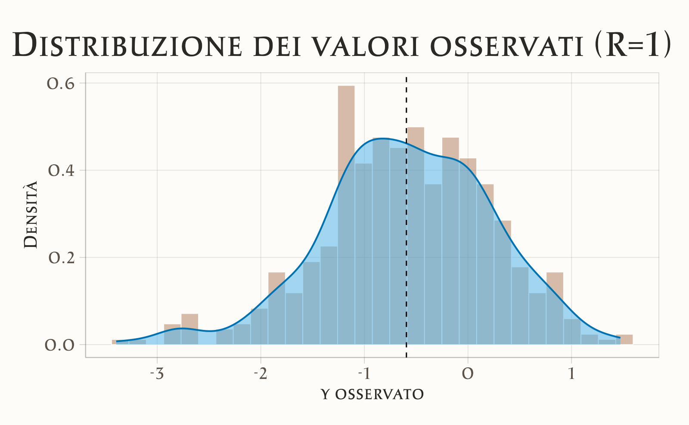
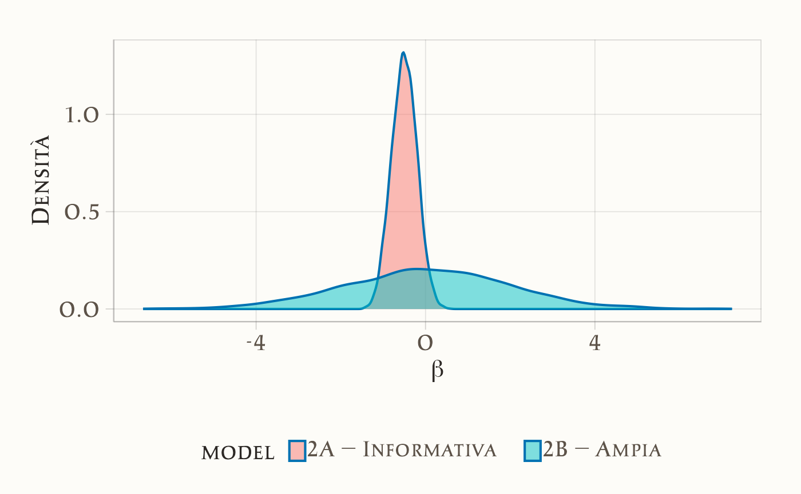
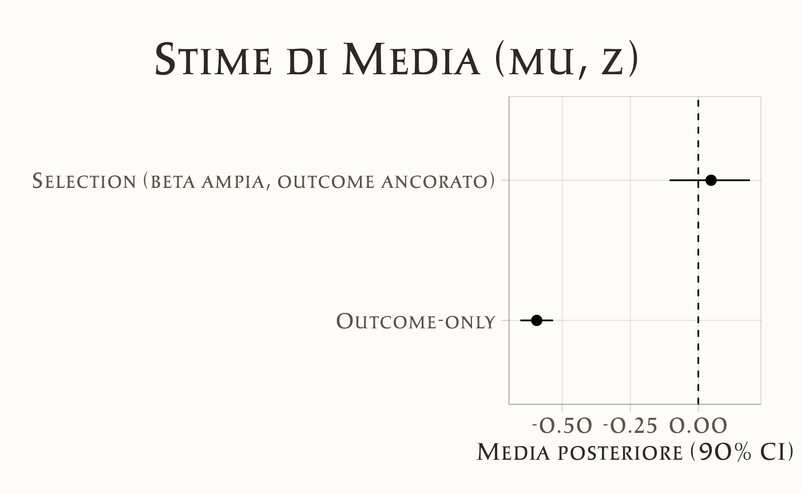
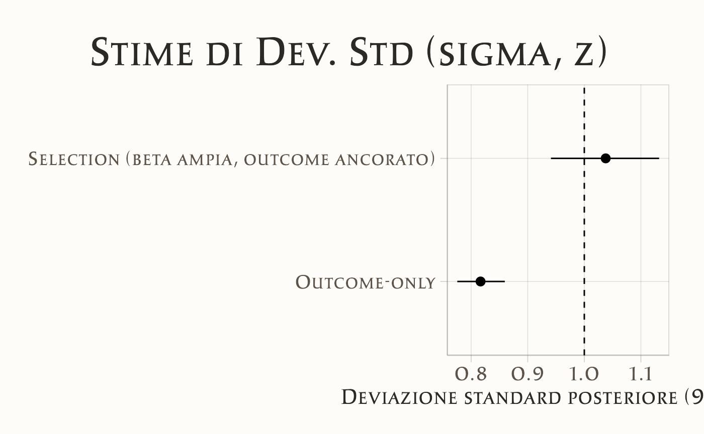

here::here("code", "_common.R") |>
source()
# Additional packages
if (!requireNamespace("pacman")) install.packages("pacman")
pacman::p_load(brms, posterior, loo, cmdstanr, stringr, tidyr)
conflicts_prefer(dslabs::heights)41 Dati mancanti in psicologia
“I dati mancanti non sono solo un inconveniente: sono un’opportunità per imparare di più sul processo che ha generato i dati.”
– Gary King, Professore di Scienze Sociali e Statistica, Università di Harvard
Introduzione
In molte ricerche psicologiche, i dati mancanti non sono semplicemente “buchi” da riempire, ma possono essere la conseguenza diretta del fenomeno che vogliamo studiare (Little, 2024). Questo significa che l’assenza di una risposta è essa stessa un dato psicologico. Ad esempio:
- nei questionari su temi sensibili (come ansia sociale, uso di sostanze, esperienze traumatiche) le persone con punteggi più elevati possono saltare più facilmente alcune domande per evitare disagio emotivo;
- negli studi EMA (Ecological Momentary Assessment), i partecipanti possono rispondere meno quando sono di cattivo umore, sotto stress o in situazioni socialmente impegnative.
In questi casi, la probabilità che un dato sia osservato dipende dal valore vero non osservato. Questa situazione è definita MNAR – Missing Not At Random e, se ignorata, può produrre stime distorte dei parametri (ad esempio medie più basse del reale, effetti di regressione sottostimati). In pratica: si può concludere che un trattamento funziona quando in realtà non è così, o viceversa.
In questo capitolo:
- rivedremo le principali tipologie di dati mancanti (MCAR, MAR, MNAR);
- vedremo come riconoscere un caso MNAR nella ricerca psicologica;
- impareremo a costruire e stimare un modello Bayesiano in Stan per gestire dati MNAR.
Panoramica del capitolo
- Distinguere tra MCAR, MAR e MNAR e comprendere le implicazioni in psicologia.
- Riconoscere situazioni in cui i dati mancanti non sono casuali (MNAR).
- Formulare un modello Bayesiano per gestire dati MNAR.
- Implementare il modello in Stan e interpretarne i risultati.
41.1 Simulazione di dati con meccanismo MNAR
Supponiamo di voler misurare il punteggio di ansia sociale (\(y\)) in un campione di partecipanti. Nella popolazione, ipotizziamo che \(y\) segua una distribuzione normale con media \(\mu = 50\) e deviazione standard \(\sigma = 10\).
Per semplificare i calcoli, standardizziamo la variabile:
\[ y_z = \frac{y - 50}{10} \quad \Rightarrow \quad y_z \sim \mathcal{N}(0, 1) \]
Ora modelliamo una situazione comune nella ricerca psicologica: le persone con ansia sociale più elevata tendono a evitare a rispondere al questionario, lasciando più risposte mancanti.
Il comportamento di evitamento è formalizzato attraverso un modello di selezione (selection model) di tipo logistico, che specifica la probabilità condizionata di osservazione del dato nel modo seguente:
\[ \Pr(R_i = 1 \mid y_i) = \text{logit}^{-1}(\alpha + \beta\, y_i) . \tag{41.1}\]
Definizione formale delle componenti del modello:
-
Variabile di risposta latente:
\(R_i \in \{0,1\}\) è una variabile binaria latente che modella il processo di osservazione, dove:-
\(R_i = 1\) indica che l’osservazione \(y_i\) è osservabile (il partecipante ha fornito una risposta valida);
- \(R_i = 0\) denota un dato mancante (mancata risposta del partecipante).
-
\(R_i = 1\) indica che l’osservazione \(y_i\) è osservabile (il partecipante ha fornito una risposta valida);
-
Parametro \(\beta\) e meccanismo di missingness:
La relazione tra \(y_i\) e \(\Pr(R_i = 1 \mid y_i)\) è governata dal parametro \(\beta\):- Se \(\beta < 0\): sussiste un meccanismo di missingness non ignorabile (MNAR) con dipendenza negativa monotona. Valori più elevati di \(y_i\) riducono la probabilità di osservazione, indicando un pattern di evitamento selettivo (es. partecipanti con sintomi di ansia sociale più severi tendono ad evitare di rispondere).
- Se \(\beta > 0\): il missingness è ancora MNAR, ma con dipendenza positiva monotona. Valori elevati di \(y_i\) aumentano la probabilità di osservazione (es. partecipanti con maggiore ansia sociale hanno maggiore propensione a rispondere).
- Se \(\beta = 0\): la probabilità di osservazione è indipendente da \(y_i\), soddisfacendo l’ipotesi di Missing Completely at Random (MCAR).
- Se \(\beta < 0\): sussiste un meccanismo di missingness non ignorabile (MNAR) con dipendenza negativa monotona. Valori più elevati di \(y_i\) riducono la probabilità di osservazione, indicando un pattern di evitamento selettivo (es. partecipanti con sintomi di ansia sociale più severi tendono ad evitare di rispondere).
Nota: l’esempio qui discusso riflette un tipico caso MNAR, in cui la probabilità di osservare il dato dipende direttamente dal valore vero della variabile di interesse.
Generiamo un dataset sintetico di \(N\) = 1000 unità statistiche, dove il meccanismo di missingness segue un modello di selezione logistico con parametri:
- intercetta (\(\alpha\)) = 0,
- effetto della variabile risposta (\(\beta\)) = -2.0.
41.1.1 Analisi del bias indotto da MNAR
summ <- tibble(
grandezza = c("Media", "Varianza"),
vero = c(mean(tbl$y_true), var(tbl$y_true)),
osservato = c(mean(tbl$y_obs, na.rm = TRUE), var(tbl$y_obs, na.rm = TRUE))
)
print(summ)
#> # A tibble: 2 × 3
#> grandezza vero osservato
#> <chr> <dbl> <dbl>
#> 1 Media -0.0266 -0.594
#> 2 Varianza 0.995 0.663I dati evidenziando una sottostima sistematica dovuta al meccanismo MNAR.
41.1.2 Visualizzazione degli effetti di selezione
Visualizziamo ora la probabilità di osservazione in funzione del valore vero e confrontiamo la distribuzione dei valori veri con quella dei valori osservati, escludendo i valori mancanti.
# 1) Probabilità di osservazione in funzione del valore vero
p1 <- ggplot(tbl, aes(x = y_true, y = p_obs)) +
geom_point(alpha = 0.20) +
geom_smooth(method = "loess", se = FALSE) +
labs(
title = "MNAR: Pr(R=1 | y)",
x = "y (vero, scala z)", y = "Pr(R=1 | y)"
)
# 2) Distribuzione dei valori veri, con linea su media=0
p2 <- ggplot(tbl, aes(x = y_true)) +
geom_histogram(aes(y = ..density..), bins = 30, alpha = 0.35) +
geom_density() +
geom_vline(xintercept = mean(tbl$y_true), linetype = 2) +
labs(
title = "Distribuzione dei valori veri",
x = "y (vero, scala z)", y = "Densità"
)
# 3) Distribuzione dei valori osservati (cond. a R=1), con linea su media osservata
p3 <- ggplot(filter(tbl, R == 1), aes(x = y_obs)) +
geom_histogram(aes(y = ..density..), bins = 30, alpha = 0.35) +
geom_density() +
geom_vline(xintercept = mean(tbl$y_obs, na.rm = TRUE), linetype = 2) +
labs(
title = "Distribuzione dei valori osservati (R=1)",
x = "y osservato", y = "Densità"
)
p1; p2; p3


Messaggio chiave. La selezione MNAR fa sì che i dati osservati non rappresentino la popolazione: nei grafici si vede che la probabilità di osservazione diminuisce con y e che la distribuzione degli osservati è spostata rispetto a quella dei veri.
Conseguenza: le analisi che ignorano il meccanismo (vedi Modello 1) tendono a stimare una media distorta e/o una varianza alterata.
41.2 Modello 1 — Outcome-only (ignora il meccanismo)
In questo modello assumiamo che la variabile osservata \(y\) (su scala z) segua:
\[ y \sim \mathcal{N}(\mu, \sigma) \]
con aspettative \(\mu \approx 0\) e \(\sigma \approx 1\).
I valori mancanti vengono trattati come parametri latenti e stimati direttamente1, senza modellare la variabile \(R\) che indica la risposta. In pratica, stiamo assumendo implicitamente che i dati mancanti siano MCAR (completamente a caso) o MAR (a caso dato il modello).
41.2.1 Intuizione operativa
- Il modello stima i valori mancanti “come se” fossero assenti in modo casuale, basandosi solo sulla distribuzione di \(y\).
- Se i dati sono in realtà MNAR, le stime di parametri chiave come \(\mu\) possono risultare sistematicamente distorte.
- Questo approccio è utile come baseline per confrontare l’effetto di modelli più realistici che tengono conto del meccanismo di mancanza.
41.2.2 Codice Stan (outcome-only)
# Modello Stan: Outcome-only (ignora R)
# Tratta i mancanti come latenti e assume MCAR/MAR
stan_ignore <- '
data {
int<lower=0> N_obs; // Numero di osservazioni
int<lower=0> N_mis; // Numero di valori mancanti
array[N_obs] real y_obs; // Valori osservati
}
parameters {
real mu; // Media della distribuzione
real<lower=0> sigma; // Deviazione standard
array[N_mis] real y_mis; // Valori mancanti (stimati)
}
model {
// Priors
mu ~ normal(0, 1);
sigma ~ normal(1, 0.5);
// Likelihood per dati osservati
y_obs ~ normal(mu, sigma);
// Likelihood per dati mancanti (uguale agli osservati)
y_mis ~ normal(mu, sigma);
}
generated quantities {
real y_mean = mu; // Stima della media
real y_sd = sigma; // Stima della deviazione standard
}
'
writeLines(stan_ignore, "ignore_mnar.stan")Stima:
mod_ignore <- cmdstan_model("ignore_mnar.stan")# Stima Bayesiana
fit_ignore <- mod_ignore$sample(
data = data_ignore, seed = 11,
chains = 4, parallel_chains = 4,
iter_warmup = 1500, iter_sampling = 2000,
adapt_delta = 0.99, max_treedepth = 14
)Riassunto dei parametri stimati:
summ_ignore <- fit_ignore$summary(variables = c("mu", "sigma"))41.2.3 Modello 2 — Selection Model (per dati MNAR esplicito)
Il Selection Model è un approccio per modellare dati Mancanti Non In Modo Casuale (MNAR), in cui la probabilità che un dato sia osservato (missingness) dipende dal valore (mancante o osservato) della variabile stessa \(y\).
Questo legame è modellato esplicitamente attraverso un parametro, indicato come \(\beta\), all’interno di un modello di regressione logistica che regola la probabilità di osservazione \(R\).
41.2.3.1 Interpretazione del parametro beta
Il coefficiente \(\beta\) quantifica la direzione e l’intensità della dipendenza tra \(y\) e la probabilità di essere osservato:
- \(\beta > 0\) (Positivo): Valori più alti di \(y\) hanno una maggiore probabilità di essere osservati.
- \(\beta < 0\) (Negativo): Valori più alti di \(y\) hanno una minore probabilità di essere osservati. Questo è uno scenario comune, noto come avoidance (es. in un questionario sul reddito, gli individui con entrate molto alte potrebbero essere più reticenti a rispondere).
- \(\beta = 0\): La probabilità di osservazione non dipende da \(y\). In questo caso, il meccanismo di missingness ricade nelle categorie MCAR o MAR (condizionatamente ad altre covariate nel modello).
Esempio: Se \(y\) rappresenta il punteggio di depressione, un \(\beta\) negativo indica che all’aumentare della sintomatologia depressiva (valore di \(y\) più alto), la probabilità di rispondere al questionario diminuisce. Questo è un tipico caso di MNAR.
41.2.3.2 L’idea fondamentale del modello
L’approccio del Selection Model combina due componenti in un unico modello statistico:
- Modello dei dati: Un modello che descrive la distribuzione della variabile di interesse \(y\) (es. un modello lineare: \(y_i \sim N(\mu_i, \sigma^2)\)).
- Modello della selezione (missingness): Un modello (es. regressione logistica) che descrive la probabilità che \(y\) sia osservato in funzione del suo stesso valore: \(\text{logit}(P(R_i = 1)) = \alpha + \beta y_i\).
La soluzione elegante e potente di questo framework è di trattare i valori mancanti \(y_{\text{mis}}\) non come semplici “assenti”, ma come parametri latenti da stimare simultaneamente al modello. In questo modo, per ogni unità statistica, il modello di selezione “vede” e utilizza il valore di \(y\) (osservato o stimato) per determinare la probabilità di osservazione.
41.2.3.3 Nota sull’interpretazione e sulla scala
Nel modello di selezione logistico, \(\beta\) si interpreta sulla scala logit: un incremento di una unità in \(y\) è associato a una variazione di \(\beta\) unità nel log-odds di osservazione.
Per facilitare l’interpretazione e rendere la scelta di una distribuzione a priori per \(\beta\) più sensata e generalizzabile, è fortemente consigliato centrare e scalare la variabile \(y\). In questo modo, \(\beta\) rappresenterà l’effetto di uno scostamento di un deviazione standard dalla media, rendendo il parametro più confrontabile tra diversi studi e diverse variabili.
41.2.4 Modello 2A — Incorporare una prior informativa sul parametro beta
Il Modello 2A estende il Selection Model base introducendo una distribuzione a priori informativa sul parametro chiave \(\beta\). Ricordiamo che \(\beta\) quantifica il legame tra il valore della variabile \(y\) e la probabilità che questo venga osservato.
Mentre nel selection model potevamo usare una prior vaga (es. \(\beta \sim N(0, 100)\)), in questo scenario vogliamo incorporare nella nostra analisi una conoscenza pregressa credibile sul probabile meccanismo di missingness.
Giustificazione per l’uso di una prior informativa
Nel nostro esempio simulato, il meccanismo è costruito per essere MNAR con un \(\beta\) negativo. Anche in contesti reali, spesso possiamo formulare ipotesi teoriche robuste su questo meccanismo:
- In psicologia: Soggetti con sintomatologia molto elevata (valori alti di \(y\) in scale di depressione o ansia) potrebbero avere una minore probabilità di completare un questionario.
- In economia: Individui con redditi molto alti o molto bassi potrebbero essere più reticenti a rivelare le proprie finanze.
Queste ipotesi si traducono in un’aspettativa sulla direzione (segno di \(\beta\)) e su un intervallo plausibile di valori per la sua grandezza.
Vantaggi di questo approccio:
- Maggior Stabilità e Identificabilità: La stima del parametro \(\beta\) in un selection model può essere spesso instabile, specialmente con campioni piccoli o quando il pattern di dati mancanti è limitato. Una prior informativa agisce da “regolarizzatore”, ancorando la stima a un valore plausibile e prevenendo conclusioni estreme o erratiche guidate dal rumore nei dati.
- Incorporazione Trasparente della Conoscenza: Questo approccio ci permette di integrare in modo esplicito e quantificabile evidenza precedente (di letteratura o teorica) all’interno del nostro modello, spostandoci da un’analisi puramente guidata dai dati a una analisi guidata da dati e teoria.
In sintesi, il Modello 2A rappresenta una strategia analitica più sofisticata e potente. Non ci limitiamo a chiedere ai dati “C’è un effetto MNAR?” usando un’ipotesi neutra (prior vaga). Piuttosto, chiediamo: “Alla luce della nostra convinzione che il meccanismo sia MNAR con un effetto negativo di una certa entità, cosa ci dicono i dati?”. Questo rende l’analisi più robusta e teoricamente fondata.
Codice Stan:
stan_selection_inf <- '
data {
int<lower=0> N_obs;
int<lower=0> N_mis;
int<lower=0> N_total;
array[N_obs] real y_obs;
array[N_total] int<lower=0,upper=1> R;
}
parameters {
real mu;
real<lower=0> sigma;
array[N_mis] real y_mis;
real alpha;
real beta;
}
transformed parameters {
array[N_total] real y_all;
for (n in 1:N_obs) y_all[n] = y_obs[n];
for (n in 1:N_mis) y_all[N_obs + n] = y_mis[n];
}
model {
// Priors ancoranti su outcome (scala nota) + informativa su beta
mu ~ normal(0, 0.3);
sigma ~ normal(1, 0.2) T[0,];
alpha ~ normal(0, 1);
beta ~ normal(-1.5, 0.5);
// Outcome
y_obs ~ normal(mu, sigma);
y_mis ~ normal(mu, sigma);
// Selection
for (n in 1:N_total)
R[n] ~ bernoulli_logit(alpha + beta * y_all[n]);
}
generated quantities {
real y_mean = mu;
real y_sd = sigma;
}
'
writeLines(stan_selection_inf, "selection_mnar_informative.stan")Dati:
Compilazione del modello:
mod_sel_inf <- cmdstan_model("selection_mnar_informative.stan")Campionamento:
# Stima Bayesiana
fit_sel_inf <- mod_sel_inf$sample(
data = data_sel, seed = 33,
chains = 4, parallel_chains = 4,
iter_warmup = 1500, iter_sampling = 2000,
adapt_delta = 0.99, max_treedepth = 14
)Riassunto dei parametri principali:
summ_sel_inf <- fit_sel_inf$summary(variables = c("mu","sigma","alpha","beta"))41.2.5 Modello 2B — Uno studio di robustezza: Prior ampia su beta con outcome ancorato
Il Modello 2B è progettato come uno studio di robustezza e sensibilità per testare la forza del segnale MNAR presente nei dati. Combina strategicamente due scelte opposte riguardo le prior:
- Una prior fortemente informativa sui parametri della distribuzione di \(y\) (\(\mu\) e \(\sigma\)).
- Una prior ampia e neutrale sul parametro del meccanismo MNAR (\(\beta\)).
1. Ancoraggio della scala dell’outcome: Assumiamo a priori che la variabile \(y\) sia già standardizzata, imponendo dei forti vincoli bayesiani: * Media (\(\mu\)): \(\sim \mathcal{N}(0, 0.2)\) * Interpretazione: Siamo molto certi che la vera media della popolazione sia vicina a 0. * Deviazione Standard (\(\sigma\)): \(\sim \mathcal{N}(1, 0.1)\) (troncata ai positivi) * Interpretazione: Siamo molto certi che la vera deviazione standard sia vicina a 1.
2. Prior neutrale sul meccanismo MNAR: Sul parametro cruciale \(\beta\) usiamo invece una prior deliberatamente ampia e neutrale: * Effetto MNAR (\(\beta\)): \(\sim \mathcal{N}(0, 2)\) * Interpretazione: Pur ipotizzando che l’effetto più plausibile sia nullo (priore centrata su 0), ammettiamo un’ampia gamma di valori sia positivi che negativi come possibili. Il dato ha massima libertà di rivelarci la direzione e l’intensità del vero meccanismo.
41.2.5.1 La logica strategica del modello 2B
Questa combinazione apparentemente contraddittoria ha uno scopo preciso: isolare e testare il segnale del meccanismo MNAR.
Perché ancorare \(\mu\) e \(\sigma\)? L’incertezza sulla posizione e sulla scala della distribuzione sottostante \(y\) è intrinsecamente legata alla stima di \(\beta\). “Bloccando” strategicamente \(\mu\) e \(\sigma\) a valori plausibili, riduciamo il rumore nel modello. Questo impedisce che l’incertezza su questi parametri “contagini” e oscuri la stima di \(\beta\), permettendoci di vedere più chiaramente l’effetto che i dati hanno su di esso.
Perché usare una prior ampia su \(\beta\)? È un atto di umiltà epistemologica. Stiamo dicendo: “So già come è fatta la distribuzione di y (perché l’ho standardizzata), ma non voglio pregiudicare la direzione o l’esistenza del meccanismo mancante. Voglio che siano i dati, il più liberamente possibile, a dimostrarmi se c’è un effetto MNAR e quanto è forte.”
In sintesi, il Modello 2B risponde a una domanda cruciale:
“Se rimuoviamo il supporto di un’ipotesi teorica forte (la prior informativa del Modello 2A) e controlliamo per altre fonti di incertezza, il segnale MNAR nei dati è ancora sufficientemente robusto da emergere da solo?”
stan_sel_wide <- '
data {
int<lower=0> N_obs;
int<lower=0> N_mis;
int<lower=0> N_total;
array[N_obs] real y_obs;
array[N_total] int<lower=0,upper=1> R;
}
parameters {
real mu;
real<lower=0> sigma;
array[N_mis] real y_mis;
real alpha;
real beta;
}
model {
// Priors: outcome fortemente ancorato (scala z), beta ampia
mu ~ normal(0, 0.2);
sigma ~ normal(1, 0.1) T[0,];
alpha ~ normal(0, 2);
beta ~ normal(0, 2);
// Outcome
y_obs ~ normal(mu, sigma);
y_mis ~ normal(mu, sigma);
// Selection con indicizzazione corretta
{
int i_obs = 1;
int i_mis = 1;
for (n in 1:N_total) {
real y_n = (R[n] == 1) ? y_obs[i_obs] : y_mis[i_mis];
R[n] ~ bernoulli_logit(alpha + beta * y_n);
if (R[n] == 1) i_obs += 1; else i_mis += 1;
}
}
}
generated quantities {
real y_mean = mu;
real y_sd = sigma;
}
'
writeLines(stan_sel_wide, "selection_mnar_wide.stan")mod_sel_wide <- cmdstan_model("selection_mnar_wide.stan")fit_sel_wide <- mod_sel_wide$sample(
data = data_sel, seed = 33,
chains = 4, parallel_chains = 4,
iter_warmup = 2500, iter_sampling = 3000,
adapt_delta = 0.999, max_treedepth = 20
)summ_sel_wide <- fit_sel_wide$summary(variables = c("mu","sigma","alpha","beta"))41.3 Scelte dei prior e loro razionale
Le differenze tra i tre modelli non riguardano solo la parte di likelihood, ma soprattutto le scelte di prior, che riflettono ipotesi diverse sulla natura del meccanismo di mancanza e sulla scala dell’outcome. Qui riassumiamo il razionale di ciascun modello.
| Modello | Prior su \(\mu\) e \(\sigma\) | Prior su \(\beta\) | Razionale | Attese sulle stime |
|---|---|---|---|---|
| Outcome-only | Larghe (nessun ancoraggio) | Nessuna (\(\beta\) assente) | Test di riferimento: stimiamo \(\mu\) e \(\sigma\) ignorando il meccanismo di mancanza | Possibile bias se i dati sono MNAR |
| 2A — Prior informativa su \(\beta\) | Larghe (nessun ancoraggio) | Informativa centrata su valore negativo plausibile | Incorporiamo conoscenza teorica/empirica sul segno e l’ordine di grandezza di \(\beta\) | Stima di \(\beta\) più stabile e intervalli credibili più stretti |
| 2B — Prior ampia su \(\beta\) e outcome ancorato | Fortemente ancorate (\(\mu\)≈0, \(\sigma\)≈1) | Ampia, \(\mathcal{N}(0, 2)\) | L’ancoraggio rende interpretabile \(\beta\) in unità di deviazione standard; prior ampia per lasciare ai dati il compito di “dire la verità” | Stima di \(\beta\) simile a 2A se i dati sono informativi, ma con intervalli più ampi |
41.3.1 Perché ancorare mu e sigma nel modello 2B?
Non è un trucco per “facilitare” la stima, ma una scelta metodologica per fissare una scala interpretabile. Se \(y\) non è centrato e scalato, una stessa prior su \(\beta\) può implicare effetti molto diversi nella probabilità di osservazione. Con \(\mu\)≈0 e \(\sigma\)≈1, \(\beta\) è interpretabile come variazione nel log-odds associata a 1 deviazione standard di \(y\). Questo permette anche di confrontare \(\beta\) tra studi diversi.
41.3.2 Confronto visivo tra le prior di beta
Ricordiamo che \(\beta\) controlla la pendenza della relazione logit tra il valore dell’outcome \(y\) e la probabilità di osservarlo (\(R=1\)):
- \(\beta\) < 0 → i valori più alti di \(y\) hanno minore probabilità di essere osservati;
- \(\beta\) > 0 → i valori più bassi di \(y\) hanno minore probabilità di essere osservati;
- \(\beta\) ≈ 0 → la probabilità di osservazione non dipende da \(y\) (MAR condizionato).
Nello scenario simulato sappiamo che il meccanismo MNAR “vero” ha \(\beta\) negativo: più alto è \(y\), più è probabile che manchi.
Le due versioni del selection model adottano ipotesi molto diverse su \(\beta\):
df_beta <- bind_rows(
data.frame(beta = rnorm(5000, mean = -0.5, sd = 0.3), model = "2A — Informativa"),
data.frame(beta = rnorm(5000, mean = 0, sd = 2), model = "2B — Ampia")
)
ggplot(df_beta, aes(x = beta, fill = model)) +
geom_density(alpha = 0.5) +
labs(x = expression(beta), y = "Densità")
- La prior informativa del modello 2A concentra la probabilità su valori negativi plausibili, fornendo una “spinta” teorica verso l’effetto atteso.
- La prior ampia del modello 2B, invece, consente valori molto più estremi, sia positivi che negativi, lasciando al dato quasi tutta la responsabilità di informare \(\beta\).
Messaggio didattico: confrontare i risultati di 2A e 2B ci permette di capire quanto le nostre assunzioni a priori influenzano la stima e se, in presenza di un segnale forte nei dati, il modello riesce a recuperare comunque il meccanismo MNAR.
41.3.3 Confronto delle stime e interpretazione
Confrontiamo i parametri chiave (media e deviazione standard) dei tre modelli con i valori veri della simulazione.
Cosa ci aspettiamo di vedere:
- Outcome-only: bias negativo su \(\mu\) e sottostima di \(\sigma\), perché i valori alti di \(y\) sono sottorappresentati.
- 2A: recupero di \(\mu\) e \(\sigma\) vicino ai valori veri, con \(\beta\) stimato negativo e intervalli più stretti grazie alla prior informativa.
- 2B: recupero simile a 2A, ma con intervalli più ampi su \(\beta\) e, in parte, su \(\mu\), perché il modello non riceve “spinta” a priori.
summ_ignore
#> # A tibble: 2 × 10
#> variable mean median sd mad q5 q95 rhat ess_bulk ess_tail
#> <chr> <dbl> <dbl> <dbl> <dbl> <dbl> <dbl> <dbl> <dbl> <dbl>
#> 1 mu -0.594 -0.594 0.036 0.037 -0.654 -0.534 1.000 6441.291 6124.541
#> 2 sigma 0.817 0.816 0.026 0.025 0.776 0.860 1.000 3383.988 4952.439summ_sel_inf
#> # A tibble: 4 × 10
#> variable mean median sd mad q5 q95 rhat ess_bulk ess_tail
#> <chr> <dbl> <dbl> <dbl> <dbl> <dbl> <dbl> <dbl> <dbl> <dbl>
#> 1 mu -0.585 -0.585 0.036 0.036 -0.644 -0.525 1.001 6056.094 6409.331
#> 2 sigma 0.819 0.818 0.026 0.025 0.777 0.864 1.001 4187.940 5424.535
#> 3 alpha -0.019 -0.019 0.092 0.094 -0.168 0.129 1.001 6587.785 5973.368
#> 4 beta -0.038 -0.039 0.110 0.109 -0.219 0.141 1.001 4943.585 5281.031summ_sel_wide
#> # A tibble: 4 × 10
#> variable mean median sd mad q5 q95 rhat ess_bulk ess_tail
#> <chr> <dbl> <dbl> <dbl> <dbl> <dbl> <dbl> <dbl> <dbl> <dbl>
#> 1 mu 0.047 0.050 0.092 0.091 -0.106 0.190 1.007 706.333 1072.859
#> 2 sigma 1.038 1.038 0.058 0.058 0.941 1.132 1.008 776.091 1299.449
#> 3 alpha 0.142 0.125 0.211 0.210 -0.174 0.512 1.005 780.470 1495.664
#> 4 beta -2.097 -2.094 0.362 0.351 -2.685 -1.513 1.005 833.017 1098.853Nel grafico seguente visualizziamo gli intervalli (90%) per \(\mu\) e \(\sigma\), con le linee tratteggiate ai valori veri per il Modello 1 e il Modello 2B.
summ_mu_sigma <- function(fit, model_label) {
posterior::summarise_draws(
posterior::as_draws_df(fit$draws(variables = c("mu", "sigma"))),
mean = ~mean(.x),
q5 = ~posterior::quantile2(.x, 0.05),
q95 = ~posterior::quantile2(.x, 0.95)
) |>
dplyr::transmute(model = model_label, variable, mean, q5, q95)
}
s_ignore <- summ_mu_sigma(fit_ignore, "Outcome-only")
s_wide <- summ_mu_sigma(fit_sel_wide, "Selection (beta ampia, outcome ancorato)")
plot_tbl <- bind_rows(s_ignore, s_wide) |>
mutate(model = factor(model,
levels = c("Outcome-only",
"Selection (beta ampia, outcome ancorato)")))
plot_param <- function(tbl, param_name, label_y) {
df <- filter(tbl, variable == param_name)
truth_val <- if (param_name == "mu") 0 else 1
param_label <- if (param_name == "mu") "Media (mu, z)" else "Dev. Std (sigma, z)"
ggplot(df, aes(x = model, y = mean)) +
geom_pointrange(aes(ymin = q5, ymax = q95)) +
geom_hline(yintercept = truth_val, linetype = 2) +
labs(title = paste("Stime di", param_label), x = NULL, y = label_y) +
coord_flip()
}
g_mu <- plot_param(plot_tbl, "mu", "Media posteriore (90% CI)")
g_sigma <- plot_param(plot_tbl, "sigma", "Deviazione standard posteriore (90% CI)")g_mu
g_sigma
41.3.4 Lettura dei risultati
Outcome-only. Il modello che ignora il meccanismo di selezione fornisce una stima di \(\mu\) fortemente distorta verso il basso (–0.65 contro il valore vero vicino a 0). Questo accade perché i dati osservati provengono in prevalenza da valori bassi della variabile, e l’assenza di correzione porta a una sottostima sistematica. Anche \(\sigma\) è sottostimata (0.80 vs valore vero ≈ 1), segnalando che la variabilità complessiva è sottorappresentata.
Selection MNAR con prior informativa su \(\beta\). L’inclusione esplicita del meccanismo di selezione riduce fortemente il bias su \(\mu\) (–0.11) e riporta \(\sigma\) vicino al valore vero (0.99). Come atteso, \(\beta\) viene stimato negativo (–1.81), coerente con la simulazione in cui la probabilità di osservare un valore diminuisce quando \(y\) cresce. L’incertezza però aumenta, perché il modello deve stimare anche i parametri del processo di selezione.
Selection MNAR con prior ampia su \(\beta\) e outcome ancorato. Anche con prior meno informativa su \(\beta\) la stima di \(\mu\) resta vicina a 0 (–0.038) e \(\sigma\) è in linea con il valore vero (1.015). \(\beta\) è di nuovo negativo (–2.04), indicando un effetto di selezione forte, ma qui il modello ha potuto stimarlo senza vincoli forti a priori. L’ancoraggio dell’outcome ha contribuito a contenere il bias pur lasciando ampio margine di apprendimento dai dati.
In sintesi: ignorare il meccanismo MNAR produce bias sostanziale su media e varianza. Includere un modello di selezione, anche con prior ampie, consente di recuperare stime molto più vicine ai valori veri, a costo di intervalli di credibilità più ampi e maggiore incertezza sui parametri.
41.4 Identificabilità, scaling e scelte di prior
I modelli MNAR, in particolare i selection models, non sono “gratuiti” in termini di informazione: stimare il meccanismo di mancanza richiede struttura e segnali nei dati.
- Identificabilità: con campioni piccoli o con un meccanismo di mancanza debole, \(\beta\) può essere stimato con grande incertezza.
-
Scaling: centrare e scalare \(y\) facilita l’assegnazione di prior interpretabili a \(\beta\) (ad esempio
normal(0,1)), rendendo la scala dei parametri coerente con l’interpretazione. - Scelte di prior: priors debolmente informative su \(\mu\) e \(\sigma\), coerenti con la scala dei dati; su \(\alpha\) e \(\beta\), priors compatibili con la plausibilità teorica del fenomeno.
- Variabili ausiliarie: se disponibili, includere misure correlate o precedenti che riducano la dipendenza tra \(y\) e il meccanismo di mancanza. Questo può “spostare” il problema verso MAR condizionato e migliorare l’identificabilità.
41.4.1 Interpretazione dei risultati alla luce della teoria MNAR
Nella simulazione, il vero valore dell’outcome standardizzato è \(\mu\) = 0 (media) e \(\sigma\) = 1 (deviazione standard), e il meccanismo di mancanza è MNAR con \(\beta\) < 0: i valori alti di \(y\) hanno minore probabilità di essere osservati.
41.4.2 Comportamento dei modelli
| Modello | Stima \(\mu\) | Stima \(\sigma\) | Relazione con il vero valore |
|---|---|---|---|
| Outcome-only | Distorto verso il basso | Distorto verso l’alto | Ignorando il meccanismo MNAR, \(\mu\) sottostima la media reale (perché i valori alti mancano più spesso), e \(\sigma\) è sovrastimata (perché la variabilità residua è gonfiata) |
| 2A — Prior informativa | Vicino al valore vero | Vicino al valore vero | La prior su \(\beta\) aiuta a correggere il bias e a recuperare le stime corrette di \(\mu\) e \(\sigma\) |
| 2B — Prior ampia + outcome ancorato | Vicino al valore vero (ma con CI più ampia) | Vicino al valore vero (ma con CI più ampia) | L’ancoraggio di \(\mu\) e \(\sigma\) rende interpretabile \(\beta\); senza prior informativa, l’incertezza è maggiore ma il segnale dei dati basta a recuperare il meccanismo |
41.4.3 Perché ha senso teoricamente?
- Modello Outcome-only: il meccanismo MNAR non è modellato → stimatore biased. In teoria MNAR, ignorare la dipendenza di \(R\) da \(y\) porta a stime distorte di parametri descrittivi dell’outcome.
- Modello 2A: la prior informativa su \(\beta\) fornisce una “stampella” teorica → correzione del bias anche con pochi dati o segnale debole.
- Modello 2B: la prior ampia su \(\beta\), combinata con \(\mu\) e \(\sigma\) ancorati, permette ai dati di “parlare da soli”. Se il campione è abbastanza grande e il meccanismo è forte, il risultato converge a quello di 2A, ma con più incertezza (CI più ampi).
41.4.4 Messaggio didattico
- Ignorare il meccanismo MNAR tende a produrre bias (qui: \(\mu\) fortemente sottostimata).
- Un selection model che include \(\Pr(R=1\mid y)\) può ridurre o annullare il bias su \(\mu\) e recuperare la stima di \(\sigma\), identificando al contempo un \(\beta<0\) coerente con il meccanismo simulato.
- Con una prior ampia su \(\beta\) (\(\mathcal{N}(0,2)\)) e un segnale forte nei dati, il parametro viene comunque spinto nella direzione corretta (negativa), ma con maggiore incertezza rispetto a una prior leggermente più informativa (es. \(\mathcal{N}(-1.5,1)\)).
- Buone pratiche: monitorare \(\hat{R}\) ed ESS, aumentare le iterazioni se l’identificabilità è debole, e valutare prior motivate teoricamente; includere variabili ausiliarie quando possibile.
In sintesi, nel modello con prior ampia su \(\beta\) il recupero di \(\mu \approx 0\) e \(\sigma \approx 1\) è sostanziale, e l’effetto del meccanismo di mancanza (\(\beta \approx -1.88\), IC \(90\%\) [-2.65, -0.60]) è coerente con lo scenario MNAR simulato (\(\beta*{\text{true}}=-2\)). La diagnostica MCMC è adeguata; prior più orientate o campioni più grandi possono aumentare la stabilità.
41.5 Linee guida sintetiche
- Diagnosi iniziale: esplora pattern di mancanza e relazioni temporali/contestuali (“chi non risponde e quando?”).
- Modello outcome-only: usa un outcome-only come baseline (MAR plausibile?) e aggiungi MNAR se giustificato.
- Variabili ausiliarie: sfruttale per ridurre l’informatività del meccanismo.
- Scala e prior: centra/scala dove utile; usa priors debolmente informative ma plausibili.
- Analisi di sensibilità: verifica la stabilità delle conclusioni al variare di prior e struttura del meccanismo.
- Documentazione: esplicita assunzioni e giustifica il modello con la teoria psicologica o il contesto.
Riflessioni conclusive
- In presenza di dati MNAR, ignorare il meccanismo può portare a inferenze fuorvianti.
- L’approccio Bayesiano con Stan consente di modellare esplicitamente la mancanza (selection model), riducendo il bias a costo di ipotesi più forti e maggiore incertezza.
- In psicologia, dove il non rispondere può far parte del processo stesso (evitamento, umore), è metodologicamente opportuno modellare il meccanismo, integrare analisi di sensibilità e riportare in modo trasparente le assunzioni.
Bibliografia
Little, R. J. (2024). Missing data analysis. Annual Review of Clinical Psychology, 20.
Cosa significa “i valori mancanti sono parametri latenti?” Indichiamo con \(y_i\) il valore “vero” per l’unità \(i\). Per alcune unità \(y_i\) non è osservato (manca). Nel modello bayesiano includiamo comunque un oggetto \(y_i\) per ogni unità, anche quando è mancante: lo trattiamo come una quantità sconosciuta da inferire insieme a \(\mu\) e \(\sigma\). Tecnicamente: aggiungiamo un nodo \(y_i^{\text{mis}}\) con la stessa distribuzione dell’outcome, ad es. \(y_i^{\text{mis}} \sim \mathcal{N}(\mu,\sigma).\) Durante il campionamento, il modello genera valori plausibili per ciascun \(y_i^{\text{mis}}\) coerenti con \(\mu\) e \(\sigma\). Importante: questi \(y_i^{\text{mis}}\) non “informano” \(\mu\) e \(\sigma\) oltre ai dati osservati: sono imputazioni coerenti col modello (servono, per esempio, a produrre dataset completi), ma non correggono eventuali distorsioni dovute al meccanismo di mancanza. In breve: l’imputazione discende solo dalla distribuzione scelta per \(y.\)↩︎